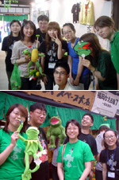
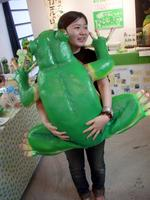
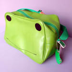
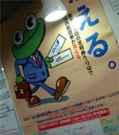

カエル新聞縮刷版が書店で発売中！
【げこげこ大王直筆】ついにカエル新聞縮刷版が出ました！今すぐ全国の書店に走ろう！創刊から９年目。カエラーとともに歩んで来た「かえる新聞」の記事の中から５０回分を抜粋してお届けする、縮刷版なのであるー。
 ネットでみてきた人も、今度は、自分の投稿記事を寝転びながら読むことができるぞおおおおおおおお。今すぐ書店に走ろう。田舎すぎて書店がないひとや、売り切れ続出で、現物が手にできないひとは、まず、表紙の画像をクリックして、きにいったらネット販売もしているので、よろしくたのむぞおお。
ネットでみてきた人も、今度は、自分の投稿記事を寝転びながら読むことができるぞおおおおおおおお。今すぐ書店に走ろう。田舎すぎて書店がないひとや、売り切れ続出で、現物が手にできないひとは、まず、表紙の画像をクリックして、きにいったらネット販売もしているので、よろしくたのむぞおお。
 この度、カエラーの同志諸君とともに歩んできた、カエル新聞の縮刷版を発刊するにいたり、まことに喜ばしく思っております。今後ともカエルのネタがあったら、どんどん投稿して、カエル徽章を手にしてくれええええええ。
この度、カエラーの同志諸君とともに歩んできた、カエル新聞の縮刷版を発刊するにいたり、まことに喜ばしく思っております。今後ともカエルのネタがあったら、どんどん投稿して、カエル徽章を手にしてくれええええええ。
かえる新聞縮刷版を地元図書館で！
【全国かえる奉賛会】書店で買えない人は、今すぐ近くの図書館にでかけて、購入をリクエストしましょーっ！！図書館に備えていれば、いつでもみんなで読めるぞおおお。ありがとう！福岡かえる展７閉幕！

【福岡かえる展５、６、７Ｅ３実行委員長】かえるの日から始まった福岡かえる展７も無事終了いたしました。皆さん本当にお疲れ様でした＆ありがとうございました！ 身動き取れない中、お客さまが待ってるんだーとお休み確保してもらった大王、いつも広報全般引き受けてくれるぴのこ事務局長、今回大王代行をしてもらった執権けおさん、出力＆暖簾（あれは手作りっすよ！）担当してくれたmitti、大変な会計締めてくれたみかさん、かおるちゃんをかえる展に招いてくれたパパ、ベンジャミンとお店を守ってくれたtakakiさん、熱出しながら（笑）来てくれたhiroちゃん、勧誘後即企画部で絵を提供してくれたマサムネさん、お昼の会場を守ってくれたはるんさん、会場駐在・出展者紹介と幅広くフォローしてくれた麻太郎さん（既にスタッフ！）、
最終日撤収頑張ってくれたはづきちゃん（起きれたね…笑）、そして何より忘れちゃいけない県外スタッフさん達…設営から前半シフトまでフォローしてくれたみきさん、関東方面の出展者までカエル縁を結んでくれた雛雛さん（グッズ提供も感謝）、一番危なかった金曜をつないでくれたkeroyan夫妻（お心遣いもありがたくっ）、今年もスタンプ製作＆来福してくれたけろけろさん…、そしてスタッフのご家族にも今回は色々と助けていただきました。また会場作りにジョーキュウ醤油さんからご助力をいただきました。もちろん大家さんにお世話になったのは言うまでもなく。本当に皆さん、ありがとうございました！（ど、どなたかお礼忘れてませんよね…？汗）例年以上にギリギリの計画（運営）ですみませんでした。お叱りの声もあるかと思いますが、そこはその梅雨の雨にザザーっと流していただいて…（すみません）。今回でワタクシも委員長の名を返上いたします。色々不手際のあった中、たくさんフォロー頂き大感謝であります。本当にありがとうございました。当然のように毎年風邪ひいてご迷惑をおかけしました（笑）いや、笑いゴトじゃないんですが…。
お客さんも７回目となれば常連さんがいっぱいです。色々お声をかけて頂いて、皆さんに支えられてるんだな〜と感じました。大名にも感謝ですね。これからいつもの生活に戻るのが大変なところであります。皆さん、あのカエル空間を胸に、見事日常復帰を果たして下さいまし（笑）お疲れさまでした！
Ｅ３カエル展実行委員長に祝福を！
【全国かえる奉賛会】かえる展実行委員長は、事実上、かえる展の運営を実行する最高責任者なのだが、第三回がカワノナミさん、四回が蓮かえるさん、そしてＥ３さんは五、六、七期を連続三回もこなしてくれたのであるうううう。ほんとうにお疲れさんでした！後日、盛大な慰労祝賀会を催すので、みんな参加してくれえええええ。超かわいいカエルバッグを発見！

【北海道発うにりん同志記者】超かわいいカエルバッグを発見しました。カエルの顔がそのもので、みたらきっと欲しくなる。もちろん私は買ってしまいました。初めての投稿ですが是非皆さんに教えたくて投稿しました。
【全国かえる奉賛会】うわああああ。可愛いバッグである。このふたつの目玉がポイントだよねー。これさえもって歩けば、注目度は抜群だ。サラリーマンの出張用にも最適である。カエル系ビジネスマンは、いますぐカエルバッグを手にして出張にゆこうではないかああ。
栄転祝福の威風堂々な蛙！

【江戸発尾張の国改め江戸詰め かえる将軍同志記者】予はこのたび東京本社へ栄転（？）と相成った。上京早々、予を祝福するかの如く威風堂々な蛙に出会うた。東京メトロ（地下鉄）各駅に掲出されておるカエルビジネスマンじゃ。予もかくの如し颯爽たる姿で仕事に励むぞよ。
【全国かえる奉賛会】平成１５年７月２７日号で紹介したカエル君はまだ帝都で活躍中であったかああああ。いつみても、颯爽としているのである。クールビスなにするものぞと、猛暑の中、ネクタイ姿で決めているのだあああ。かえる将軍は江戸に進出したのであるなー。親藩大名として将軍職を世襲してくれええ。
携帯で携帯＠カエル新聞を吸い取ろう！
 【全国かえる奉賛会】携帯から初めてカエル新聞を見たいというひとにとっては、アドレスを打つのが難儀なものよのう！そこでドコモとボーダフォンの一部機種から、カメラをかざしてコードを読みとるんぢゃああ。なお、このQRコードを眺めていたらカエルやらオタマジャクシやらが浮かび上がってくるらしいぞおお。ほんとかああ。
【全国かえる奉賛会】携帯から初めてカエル新聞を見たいというひとにとっては、アドレスを打つのが難儀なものよのう！そこでドコモとボーダフォンの一部機種から、カメラをかざしてコードを読みとるんぢゃああ。なお、このQRコードを眺めていたらカエルやらオタマジャクシやらが浮かび上がってくるらしいぞおお。ほんとかああ。